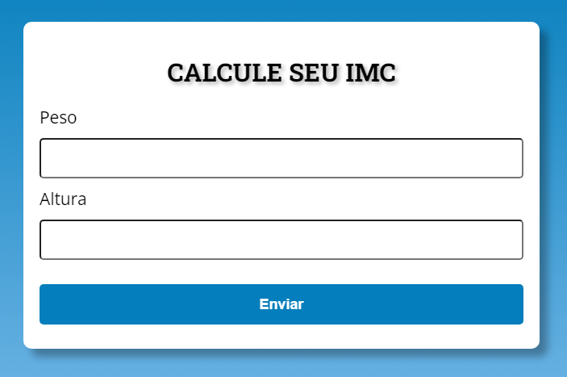

PEDRO VINICIUS WRUBLAK
Desenvolvedor Web
Este é o meu portfólio, e aqui você pode conhecer mais a fundo o meu trabalho e projetos.
Projetos
Calculadora de IMC
Com esse programa é possível calcular o Índice de Massa Corporal (IMC) de uma pessoa, considerando seu peso e altura.
 Acesse aqui